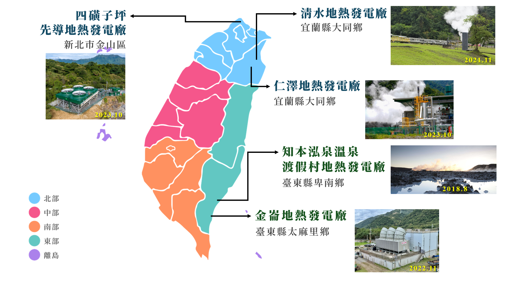

確保所有人都能取得可負擔、可靠、永續且現代化的能源
「地熱能」，簡稱「地熱」。地熱來自於地球內部，地核散發的熱量透過地函的高溫岩漿傳達至地殼。 可供開發利用之地熱一般發生在地殼破裂處，亦即板塊構造邊緣；台灣便是位於環太平洋地震帶上，因此具有發展地熱的良好先天條件。 由於地殼板塊推擠或擴張，造成火山活動，以致區域性地溫升高，目前的技術只能在部份地質適宜的區域，針對集中在地殼淺部的熱能予以開發利用， 將來若能更進一步開發較深層的地熱時，則熱能源源不絕，地熱常被稱為永不枯竭的資源。
常見的地熱依其儲存方式，可分為兩種類型，水熱型和乾熱岩型。
指地下水在多孔性或裂隙較多的岩層中吸收地熱，其所儲集的熱水及蒸汽，經適當提引後可為經濟型替代能源，即現今最常見之開發方式。
指淺藏在地殼表層的熔岩或尚未冷卻的岩體，可以人工方法造成裂隙破碎帶，再鑽孔注入冷水使其加熱成蒸汽和熱水後將熱量引出。
地熱發電的基本原理乃利用源源不絕的地熱來加熱地下水，使其成為過熱蒸汽後，當作工作流體以推動渦輪機旋轉發電。 也就是將地熱轉換為機械能，再將機械能轉換為電能；這種以蒸汽來旋轉渦輪的方式，和火力發電的原理是相同的。

圖：台灣地熱發電站分布示意圖